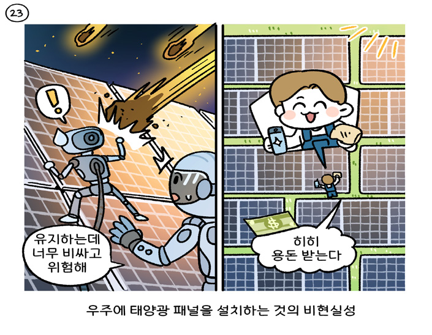

It’s가 SVconceivableconceivably (X)Cthat명접진 Sinaworld선행사where관계부사solarpanelsSareVincrediblyincredible (X)expensiveexpensively (X)Candthere’sanVextremecollapseSinthecostoflaunching동명사objectsto전space,youSmightwantVtoOmaximizeyourenergyperpanelbyputting동명사themsolar panelsabovetheatmosphere.ButpanelsSareVcheap,cheaply (X)Candeven부접ifweSassumeVprettysteepdropsOinthecostofspacelaunch,thenumbersSdon’taddVup.This계산이 맞지 않다는 점SbecomesVespeciallyclearclearly (X)Cwhen부접youSstartVtoOthinkaboutmaintenance.TrytoOimagineacresuponacresofglasspanelsinspace,regularlyhitbyintenseradiationandbitsofspacedebriswhileenduringtheextremeheatofconstantsunlight.They’llglass panels in spaceShavetobeVrepaired수동태1andcared수동태2foreitherbyastronautsoranarmyofadvancedrobots.SolarpanelsSinAustraliacanbeVcleaned수동태byateenagerwithaspraybottleandacloth.
PICTURE
TRANSLATION

태양광 패널이 엄청나게 비싸고 우주로 물체를 발사하는 비용에 극단적인 폭락이 있는 세상에서, 여러분이 패널을 대기권 위에 설치하여 패널당 에너 지를 극대화하고 싶어 할 수도 있다고 생각할 수 있다. 그러나 패널은 저렴 하고, 우리가 우주 발사 비용의 상당히 가파른 하락을 가정하더라도, 계산 이 맞지 않는다. 여러분이 유지보수에 대해 생각하기 시작하면 이것은 특히 분명해진다. 우주에 수 에이커에 달하는 유리 패널들이 끊임없는 햇빛의 극 심한 열을 견뎌 내며 강렬한 방사선과 우주 파편에 정기적으로 충격을 받 는 상상을 해 보라. 그것들은 우주 비행사나 첨단 로봇 군단에 의해 수리되 고 관리되어야 할 것이다. 호주에 있는 태양광 패널은 분무기와 헝겊으로 십 대 청소년에 의해 청소될 수 있다.